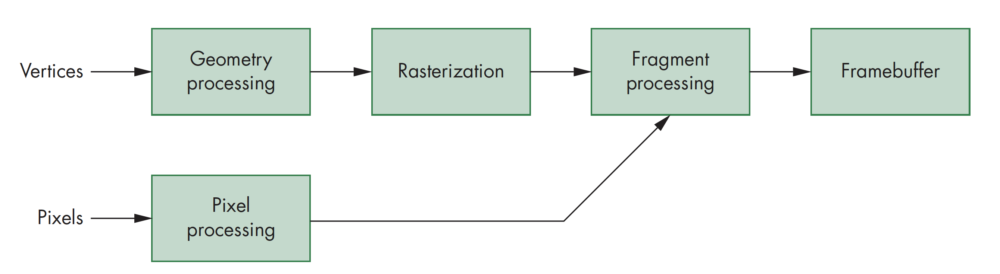
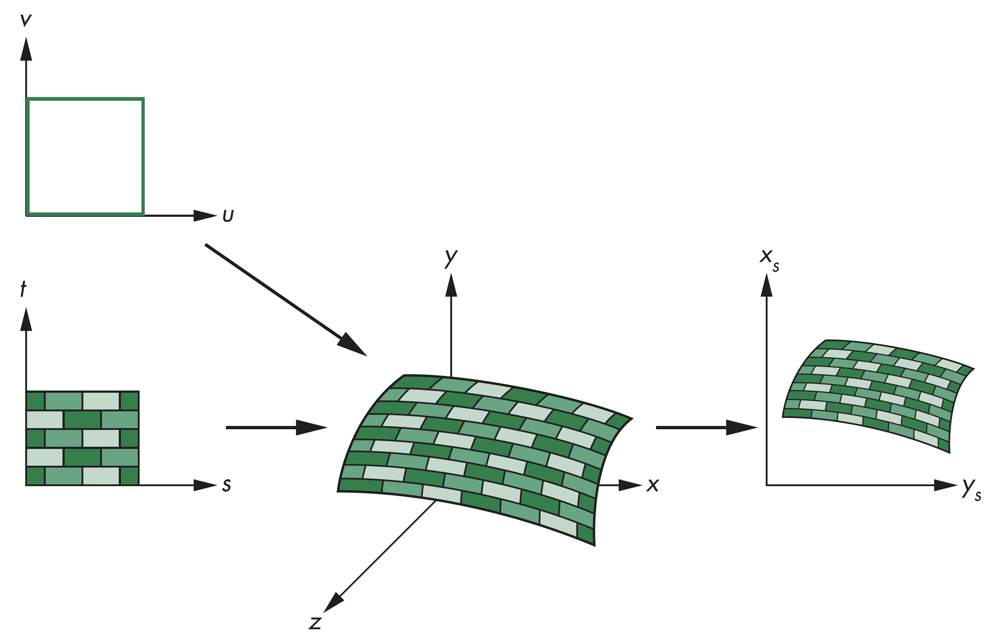
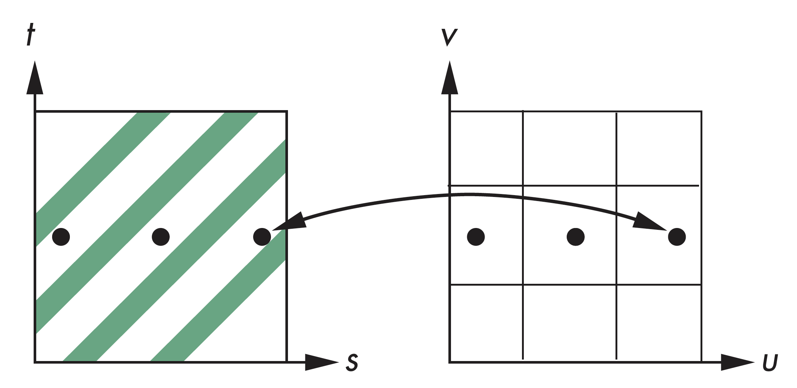

计算机图形学
第七章 离散技术
纹理映射
纹理映射
从几何建模说起
虽然现在的显卡处理多边形的速度能够达到每秒千万级，其数量仍然无法满足对很多自然现象的模拟，比如云、草、地形、皮肤等
以一个桔子的建模为例，从一个球体用桔子表皮颜色着色开始，对球体形状进行细化，使其接近桔子的真实形状，其存在的问题有二，一是无法完全表达桔子表面结构的特点，二是会产生大量的多边形

纹理映射
桔子建模
桔子建模的难点在于其表皮特征，可以考虑用一真实桔子的图片，将其"贴"到简单几何模型的表面，该过程称为纹理映射，但仍然无法完全满足要求，比如局部区域形状的平滑，要求修改局部的形状，为此可考虑采用凹凸贴图
纹理映射
映射的三种类型
映射的三种类型，分别为：
- 纹理映射(Texture Mapping)，用图像填充多边形内部区域
- 环境映射(反射贴图，Environment(Reflection) Mapping)，用环境图片作为纹理映射，可以模拟高反射表面
- 凹凸映射(Bump Mapping)，模拟渲染过程中表面具有不同的法向量，形成表面凹凸的效果
纹理映射
纹理映射示例

几何模型平滑着色

纹理映射
环境映射

凹凸映射
纹理映射
映射处理
纹理映射发生在渲染管线的最后阶段，由于面片已经经过了裁剪处理，因此计算效率很高
纹理映射
基本策略
基本映射策略需考虑两个问题:
- 正向映射还是逆向映射
- 点采样还是面积平均采样
纹理映射
映射原理
纹理映射，其基本原理是将二维图像映射到三维物体表面，其实现涉及多个坐标系间的转换

纹理映射
涉及坐标系
纹理映射过程中涉及的坐标系主要包括：
- 参数坐标系， 用于描述物体表面曲线或曲面
- 纹理坐标， 用于标识图像中用于映射的点
- 对象坐标或世界坐标， 是概念上纹理映射实际发生的坐标系
- 窗口坐标， 生成最后图像的坐标系
纹理映射
坐标系示意图
纹理映射
映射函数
纹理映射的基本问题是找到纹理坐标系到最终成像图像间的映射，即从纹理坐标到表面上点的坐标，需要找到三个映射函数，即有 $$ \begin{cases} x=x(s,t)\\ y=y(s,t)\\ z=z(s,t) \end{cases} $$

纹理映射
逆向映射
求解映射问题，可以从两方面考虑
- 给定纹理图像上的一个像素，如何找到物体上其对应的点
- 给定物体上的一个点，如何找到纹理 图像上其对应的点
纹理映射
两步映射法
两步映射法先将纹理映射到一个简单的中间形体上，比如可以先映射到一个圆柱体上

纹理映射
映射到圆柱
对圆柱体可建立参数方程
$$
\begin{cases}
x=r\cos{2\pi u}\\
y=r\sin{2\pi u}\\
z=v/h
\end{cases}
$$
将$(u,v)$空间的矩形区域映射到世界坐标系中半径为$r$高度为$h$的圆柱体上
$$
\begin{cases}
s=u\\
t=v
\end{cases}
$$
将纹理空间映射$(s,t)$到矩形区域$(u,v)$
纹理映射
映射到圆柱

纹理映射
映射到球体
可以利用球体作为中间形体，建立球体的参数方程，有 $$ \begin{cases} x=r\cos{2\pi u}\\ y=r\sin{2\pi u}\cos{2\pi v}\\ z=r\sin{2\pi u}\sin{2\pi v} \end{cases} $$ 可以同样的方式将$(u,v)$空间的矩形区域映射到世界坐标系中半径为$r$的球体上。但由于映射到球体存在形变，需要考虑对形变的处理。映射到球体主要用于环境映射
纹理映射
映射到球体

纹理映射
映射到盒子
也可以通过简单的正投影直接映射到盒子表面，同样应用于环境映射计算中

纹理映射
第二步映射
从中间形体映射到实际形体上，有三种策略：
- 沿法线从中间形体到实际形体
- 沿法线从实际形体到中间形体
- 沿中间形体中心出发的向量到实际形体

纹理映射
混淆错误
对纹理进行点采样的结果可能会造成混淆错误(Aliasing Errors)
纹理映射
面积平均
针对点采样存在的问题，可采用面积平均的方法，虽然速度较慢，但是效果较好